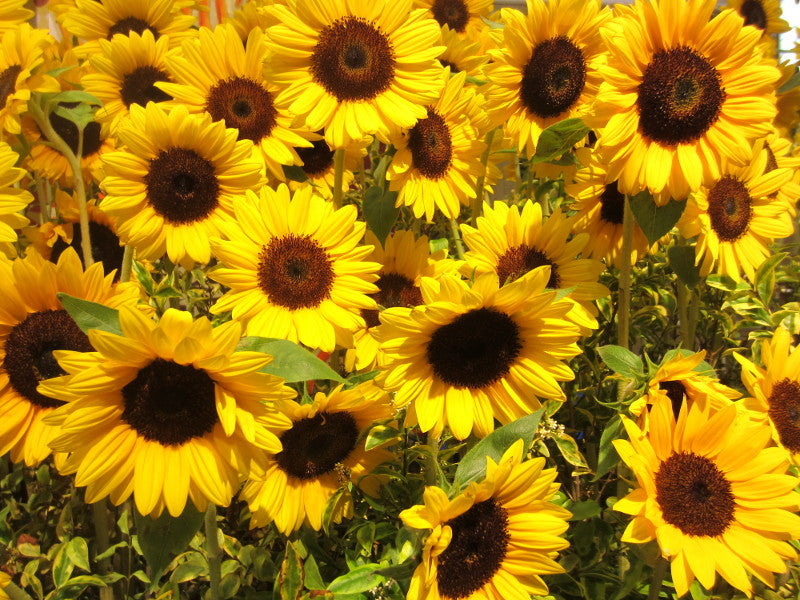
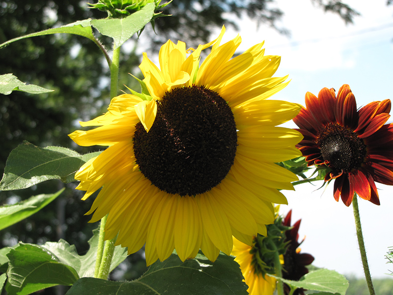
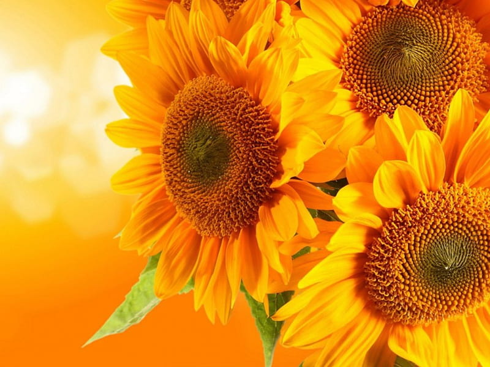

Meaning: False riches
Origin
The ancient Inca believed this large, yellow flower to symbolize the sun god, Inti, and they decorated their bodies and temples in sunflower-shaped jewelry made of gold. As Spanish conquistadores arrived, they were impressed by this abundance of treasure, and when they saw a field of sunflowers, they believed, at first, they’d come upon a literal trove of gold. Their mistake led to the bloom’s association with “false riches.”
Gallery


